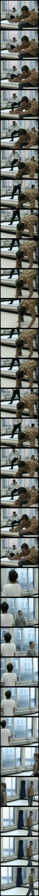

Rich family patriach Helge Klingelfeldt is particularly anxious that thier three grown children Christian, Michael and Helene, support the party’s festive mood by making a display of happy unity of the clan. Even downstairs staff is expected to somehow join in the general ambidience. When Christian eventually clears his throat and calls for silence only he knows what is to come. A speech to shock, a speech to shatter. The most heart-breaking night in living memory is about to descend on the unsuspecting Klingenfeldts. However, irrespective skeletons being mercilessly ripped out of the family closet stiff upper lips prevail and in a highly macabre way the party just keeps going on.
Kresten lives in Copenhagen yuppie circles with the prospect of a glittering carrer until he recieves a phonecall on his wedding night. From the depths of the country he hears that his father has died. He has trouble explaining the situation, as he has told everyone, including his wife Claire, that he had no living relatives. He returns to his father’s dilapidated run-down farm and comes across his elder brother, Rud, a lonely seedy simpleton quite unable to fend for himself.
A group of tourists are stranded in the Namibian desert when their bus loses its way and runs out of fuel. Canned carrots and dew keep the tourists alive, but they are helplessly entrapped, completely cut off from the rest of the world. As courage and moral fibre weaken and relationships grow shaky, Henry, a theatrical manager, persuades the group to put on Shakespeare’s tragedy King Lear. As the tourists work their way through Henry’s hand-written scripts for an audience of only the sand dunes and one distant, indigenous watcher, real life increasingly begins to resemble the play.
Jeanne and Dragan meet in a Paris bookshop, she’s working there, he’s looking for a book on the Italian painter Rossetti. The two strike up a passionate affair, but Dragan doesn’t tell her that he is in the country illegally.
The Idiots is about a group of young people who share one interest: idiocy. With a large house as their base, they spend all their spare time together exploring the hidden and less appreciated values of idiocy. They practise! The project is a manifestation of an explosive appetite for life in which they confront society with their idiocy. Nothing can be compared to the mutual feeling of success, every time their personal limits are transcended in yet another scenario. By accident Karen meets 3 members of the group and unintentionally she gets involved in their little game. She gradually understands what they are up to, and at first she is angry, but eventually she begins to participate in their diversions.
The film opens on television footage of an ice dancer a recurring motif in the film before cutting away to Julien, a young man with untreated schizophrenia. In the opening scene, Julien meets up with a small child with several turtles, only to strangle him to death when he is denied one. Julien then buries the child under the mud and prays for mercy from God. We see snapshots of Julien’s dysfunctional family, including his pregnant sister Pearl, his brother Chris, who aspires to be a wrestler, his grandmother, and his domineering, German father, who shows no real love or encouragement to his family.
The film opens on television footage of an ice dancer a recurring motif in the film - before cutting away to Julien, a young man with untreated schizophrenia. In the opening scene, Julien meets up with a small child with several turtles, only to strangle him to death when he is denied one. Julien then buries the child under the mud and prays for mercy from God. We see snapshots of Julien’s dysfunctional family, including his pregnant sister Pearl (it is implied that Julien could be the father), his brother Chris, who aspires to be a wrestler, his grandmother, and his domineering, German father, who shows no real love or encouragement to his family.
A documentary filmmaker falls for one of his subjects while interviewing her about her relationship with her boyfriend.
The film takes place decades after the Falklands War between Argentina and the United Kingdom for the control of the Falkland Islands in the South Atlantic Ocean. The film tells of Fabián Stratas, a magician and stand-up comedian from Buenos Aires, who saves his money from weddings, birthdays, and bar mitzvahs, and uses a hidden camera to document a week-long trip to the Falkland Islands, (or Fuckland, as he calls them), where he has an ingenious Argentine patriotic plan: to impregnate a Falklander woman. Stratas has a theory: if only 500 Argentines did the same each year, the islands would soon be overrun with half-Argentines, and he would be the head of a "sexual invasion."
A young woman, Marie, in her early twenties, relives her past while wiling away her time as a maid in a small town hotel. She tells a true story of how she betrayed her first love, and then proceeds to convince a middle-aged man Steve to desert his wife and kids and take her on a fling to Thailand. Stephen’s real-life wife Sue and daughter Jessica add their real-life stories, about early pregnancy and first love respectively. Even an itinerant street musician sings about love, telling his true tale of falling in love with his best friend. His ultimate mistake, he explains: seducing her sister. In the end the message is clear. Above all, avoid betraying yourself.
Andreas, a widowed pastor, arrives in a Danish suburb to take over religious duties from the previous pastor who, due to a crisis of faith after his own wife’s death, has become irreligious and even punched the organist causing him to be hospitalized. Believing his stay will be temporary Andreas stays in the local hotel where he meets one of the employees, Jørgen Mortensen, who is suffering a crisis as he has been asked to fire the temperamental Hal-Finn who works in the hotel restaurant and is also his best friend.
Kira and Mads try to work out their marriage, after Kira has been two years in a mental institution, but is she really ready for the real world?
Peter and Chris, two young American friends in their late 20s, go from South Dakota to California on a scooter, and as they travel across the American landscape they see their country through different eyes, ranging from Peter’s cynically nihilistic point of view, to Chris’ high expectations and romantic notions of the United States.
A clique of young people spend their time driving around the city, drinking in trendy nightspots and smoking joints. An outsider, Sandra who takes up with the clique, falls in love with one of its members, Daniel. Their relationship remains diffuse and directionless, provoking tension and threatening to cause a schism within the group.
A DV camera gets stolen from a video store and we follow the life of it from the camera’s point-of-vue.
A contemporary fable about an invisible man who is given the chance to become a real human being. P is an imaginary character in the mind of seven-year-old Lisa. He lives behind the wallpaper in her bedroom. One day the house is demolished and he emerges from the rubble. With no language or identity he sets out into the human world, ending up at a refugee centre. This is the start of the account of P’s dramatic progress through decline on his way to become truly human.
The entire family arrive at an ice cold cabin in the mountains far away from home. It´s Christmas. Everyone is excited. Mum, dad, four grown up children with their families, polish inlaws and a hyperactive dog, cramp togehter in the very small space. The situation grows extreme when the father drinks heavily, the mother struggles to maintain the immaculate family fasade, the kerosene burner leak, and one of the children have a major astma attack. Hell is loose. Merry christmas!
A filming team comes up in the theatre class of Pierre with yhe intention of shooting a documentary. Pierre is a teacher with big personnality and revolutionnary methods.